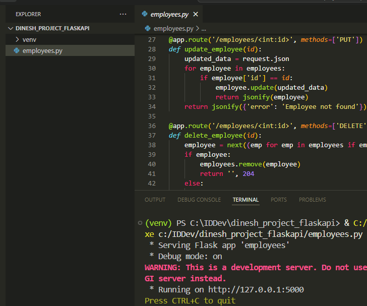
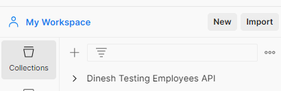
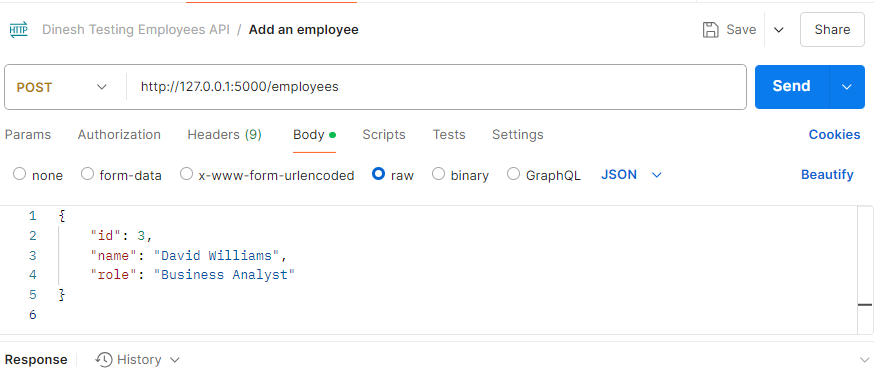
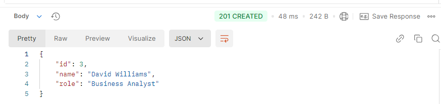
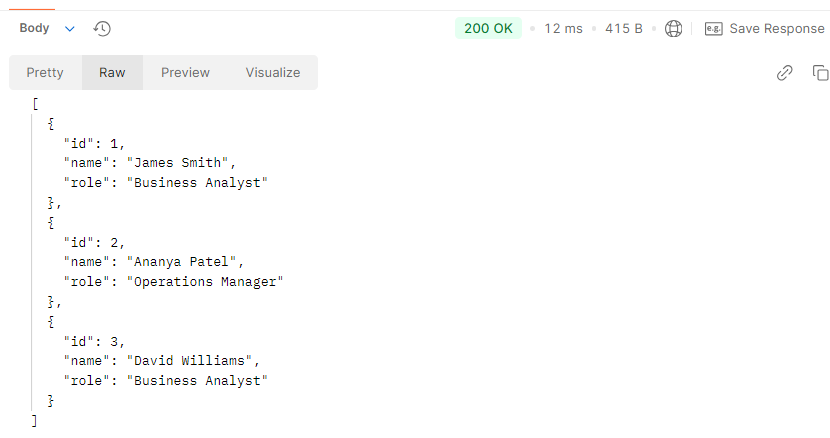
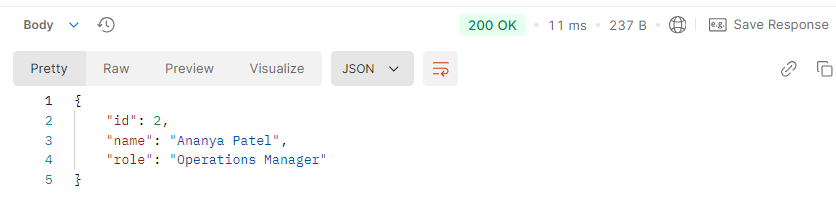
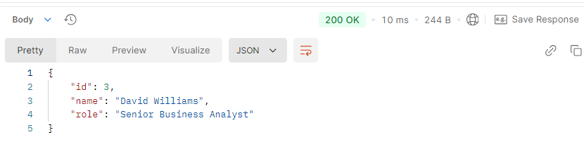
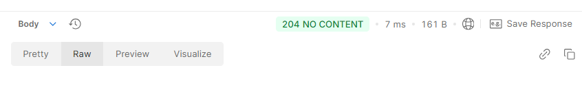

Building Your First REST API Using Flask
Flask is a Python web framework. In this walkthrough, we'll create a basic REST API to manage a list of employees. We'll cover the following operations:
-
GET requests to retrieve employee information
-
POST requests to add new employees
-
PUT requests to update existing employee details
-
DELETE requests to remove employees from the list
By following along, we'll discover the fundamental techniques for creating an API using Flask, including handling HTTP requests and responses, and creating endpoints.
Set Up the Flask Environment in Windows
Step 1: Open the terminal in Visual Studio Code and type: python -m venv venv
This creates a virtual environment. Using virtual environments ensures that the dependencies for one project don't interfere with the dependencies of other projects.
Step 2: Activate the virtual environment: venv\Scripts\activate
Step 3: Install Flask: pip install Flask
Create the Flask Application
Step 1: Create a file named employees.py.
Step 2: Import necessary components and create an instance of the Flask class:
from flask import Flask, request, jsonify
app = Flask(__name__)
-
Flask is the main class for creating a Flask application.
-
request object handles incoming HTTP requests, such as GET and POST.
-
jsonify function converts Python dictionaries into JSON responses. We will see later that each employee item will be stored as a dictionary and sent as a JSON response.
app = Flask(__name__) creates an instance of the Flask class, initializing a new Flask application.
Step 3: Define the data structure for storing employee data:
employees = [
{'id': 1, 'name': 'James Smith', 'role': 'Business Analyst'},
{'id': 2, 'name': 'Ananya Patel', 'role': 'Operations Manager'}
]
Here, we define a list of dictionaries, where each dictionary represents an employee.
Step 4: Create an API endpoint for adding a new employee (POST):
@app.route('/employees', methods=['POST'])
def add_employee():
new_employee = request.json
employees.append(new_employee)
return jsonify(new_employee), 201
The def add_employee() function is run when a POST request is made to the /employees endpoint. The function takes the new employee data from the request, adds it to the employees list, and returns the new employee data in JSON format with a 201 Created status code.
Step 5: Create an API endpoint for getting all employee (GET):
@app.route('/employees', methods=['GET'])
def get_employees():
return jsonify(employees)
The function returns the list of all employees.
Step 6: Create an API endpoint for getting a specific employee (GET):
@app.route('/employees/<int:id>', methods=['GET'])
def get_employee(id):
for employee in employees:
if employee['id'] == id:
return jsonify(employee)
return jsonify({'error': 'Employee not found'}), 404
The <int:id> part of the route means that the endpoint expects an integer as part of the URL. The integer represents the employee's ID.
Flask extracts the id value from the URL and passes it to the get_employee(id) function. For example, if the endpoint is http://localhost:5000/employees/2, Flask assigns 2 to the variable id and calls the function with id set to 2.
The function uses a for loop to check if an id matches the id provided through the URL. If a match is found, the function returns the employee's data in JSON format using jsonify(employee). If no matching employee is found, the function returns a JSON response with an error message and a 404 Not Found status.
Step 7: Create an API endpoint for updating a specific employee (PUT):
@app.route('/employees/<int:id>', methods=['PUT'])
def update_employee(id):
updated_data = request.json
for employee in employees:
if employee['id'] == id:
employee.update(updated_data)
return jsonify(employee)
return jsonify({'error': 'Employee not found'}), 404
Flask extracts the id value from the URL and passes it to the update_employee(id) function.
The function uses a for loop to check if an id matches the id provided through the URL. If a match is found, the function updates the employee data and returns the updated data in JSON format using jsonify(employee). If no matching employee is found, the function returns a JSON response with an error message and a 404 Not Found status.
Step 8: Create an API endpoint for deleting a specific employee (DELETE):
@app.route('/employees/<int:id>', methods=['DELETE'])
def delete_employee(id):
employee = next((emp for emp in employees if emp['id'] == id), None)
if employee:
employees.remove(employee)
return '', 204
else:
return jsonify({'error': 'Employee not found'}), 404
Flask extracts the id value from the URL and passes it to the delete_employee(id) function.
This line employee = next((emp for emp in employees if emp['id'] == id), None) uses a generator expression to find the first employee in the employees list whose id matches the given id. If a matching employee is found, it's assigned to the employee variable. If no match is found, employee is set to None.
If a matching employee is found, it's removed from the employees list using the remove method.
The function then returns an empty response body with a 204 No Content status code, indicating that the deletion was successful.
Step 9: Run the application when the employees.py file is run:
if __name__ == '__main__':
app.run(debug=True)
This ensures that the Flask application runs with debugging enabled when you execute employees.py directly.
Run the Application
On Visual Studio Code, click Run for employees.py to run the Flask application. This will launch the server locally on 127.0.0.1, usually port 5000:

Interact with the Flask Employees API
Once the server is up and running, you can use tools like Postman, cURL, or any other API testing tool to test the endpoints for adding, retrieving, updating, and deleting employee data.
We'll use Postman for this walkthrough.
Sending a POST Request to Add a New Employee
Step 1: In Postman, create a new request. You can group all your requests in a collection. For example, I created a collection specific for the Employees API called Dinesh Testing Employees API:

Step 2: Select the POST method from the dropdown menu.
Step 3: Enter the endpoint URL. For example, http://127.0.0.1:5000/employees.
Step 4: Click on the Body tab.
Step 5: Select the raw radio button.
Step 6: Choose JSON from the dropdown menu next to the raw radio button.
Step 7: Enter the request body in JSON format. Here's an example of what the body might look like:
{
"id": 3,
"name": "David Williams",
"role": "Business Analyst"
}
Step 8: Click Send to submit the request:

You will get a response in the response pane, showing the newly added employee's data and a 201 Created status code:

Sending a GET Request to Retrieve All Employees
Step 1: Create a new request.
Step 2: Select the GET method from the dropdown menu.
Step 3: Enter the endpoint URL. For example, http://127.0.0.1:5000/employees.
Step 4: Click Send.
You will get a response showing the data of all the employees and a 200 OK status code:

Sending a GET Request to Retrieve a Specific Employee
Step 1: Create a new request.
Step 2: Select the GET method from the dropdown menu.
Step 3: Enter the endpoint URL. In this case, we'll enter an endpoint URL with a specific employee ID. For example, http://127.0.0.1:5000/employees/2.
Step 4: Click Send.
You will get a response showing the data of the employee who has an ID of 2 and a 200 OK status code:

Sending a PUT Request to Update an Employee's Information
Step 1: Create a new request.
Step 2: Select the PUT method from the dropdown menu.
Step 3: Enter the endpoint URL. In this case, we'll enter an endpoint URL with a specific employee ID. For example, http://127.0.0.1:5000/employees/3.
Step 4: Click on the Body tab.
Step 5: Select the raw radio button.
Step 6: Choose JSON from the dropdown menu next to the raw radio button.
Step 7: Enter the request body in JSON format. Here's an example of what the body might look like:
{
"id": 3,
"name": "David Williams",
"role": "Senior Business Analyst"
}
We're changing the role from Business Analyst to Senior Business Analyst.
Step 8: Click Send.
You should receive a response with the updated employee data and a 200 OK response code:

Sending a DELETE Request to Remove an Employee
Step 1: Create a new request.
Step 2: Select the DELETE method from the dropdown menu.
Step 3: Enter the endpoint URL. In this case, we'll enter an endpoint URL with a specific employee ID. For example, http://127.0.0.1:5000/employees/3.
Step 4: Click Send.
Upon deletion, you should receive a response with no content and a 204 No Content status code:

Congratulations! By following this walkthrough, we successfully created an Employees API using Flask. By handling GET, POST, PUT, and DELETE requests, this API adheres to the principles of RESTful web services.